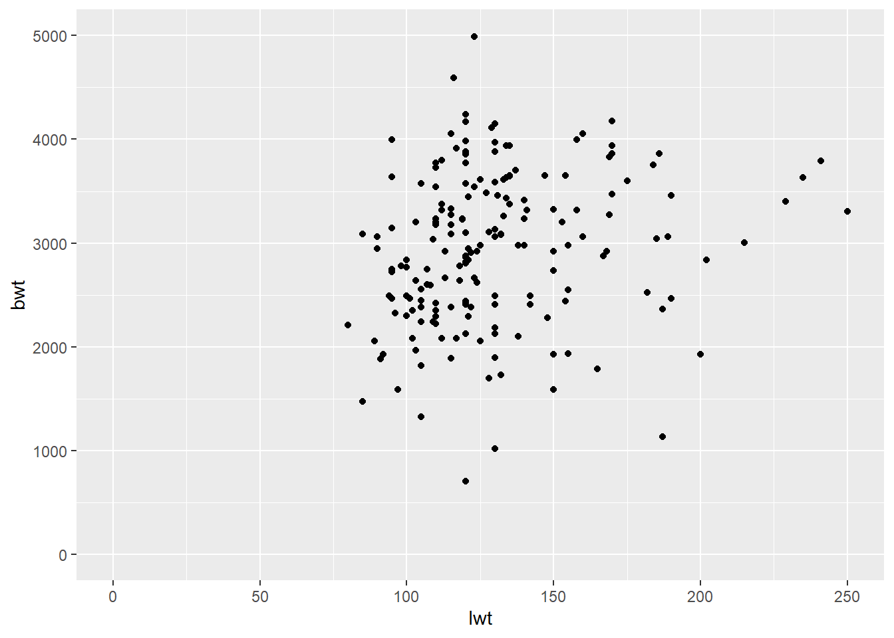

3 More Visualizing and Describing Data
In this worksheet, we will:
- Create plots with many different options using
ggplot - Consider different themes and scales
- Export our graphs as a pdf file
A very popular graphics package that can make it easier to create nice looking graphs is ggplot2. Let’s check that we have the necessary package installed:
The code for ggplot functions looks a little different than base R plots.
3.1 Import Dataset
The following data was collected at Baystate Medical Center, Springfield, MA in 1986.
| Variable | Description |
|---|---|
low |
Indicator of birth weight less than 2.5 kg |
age |
Mother’s age (years) |
lwt |
Mother’s weight (lbs) |
race |
Mother’s race (1 = white, 2 = black, 3 = other). |
smoke |
Smoking status during pregnancy |
ptl |
Number of previous premature labors |
ht |
History of hypertension |
ui |
Presence of uterine irritability |
ftv |
Number of physician visits during the first trimester |
bwt |
Birth weight (grams) |
What code can we use to get familiar with the dataset?
## 'data.frame': 189 obs. of 10 variables:
## $ low : chr "no" "no" "no" "no" ...
## $ age : int 19 33 20 21 18 21 22 17 29 26 ...
## $ lwt : int 182 155 105 108 107 124 118 103 123 113 ...
## $ race : chr "black" "other" "white" "white" ...
## $ smoke: chr "no" "no" "yes" "yes" ...
## $ ptl : chr "no" "no" "no" "no" ...
## $ ht : chr "no" "no" "no" "no" ...
## $ ui : chr "yes" "no" "no" "yes" ...
## $ ftv : chr "none" "two or more" "one" "two or more" ...
## $ bwt : int 2523 2551 2557 2594 2600 2622 2637 2637 2663 2665 ...## low age lwt
## Length:189 Min. :14.00 Min. : 80.0
## Class :character 1st Qu.:19.00 1st Qu.:110.0
## Mode :character Median :23.00 Median :121.0
## Mean :23.24 Mean :129.8
## 3rd Qu.:26.00 3rd Qu.:140.0
## Max. :45.00 Max. :250.0
## race smoke ptl
## Length:189 Length:189 Length:189
## Class :character Class :character Class :character
## Mode :character Mode :character Mode :character
##
##
##
## ht ui ftv
## Length:189 Length:189 Length:189
## Class :character Class :character Class :character
## Mode :character Mode :character Mode :character
##
##
##
## bwt
## Min. : 709
## 1st Qu.:2414
## Median :2977
## Mean :2945
## 3rd Qu.:3487
## Max. :49903.2 Creating plots with ggplot
3.2.1 Define a plot
The ggplot() function helps us build a plot. Within this function, we specify the dataframe to explore:

It’s empty because we haven’t specified how to represent the variables! We need to represent variables by mapping them with a geometric object using aes(). The type of geometric object depends on the type of data.
## `stat_bin()` using `bins = 30`. Pick better value with `binwidth`.
3.2.2 More on histograms
When looking at the histogram of the birth weight, can you tell which range of values is the most common?
## `stat_bin()` using `bins = 30`. Pick better value with `binwidth`.See the message: by default, the number of bins is 30 in ggplot. Let’s adjust that:
bw_ggplot + geom_histogram(aes(x = bwt),
# Set bin width and center (half of the bin width)
binwidth = 1000, center = 500)Try some different bin widths! Note how the general shape of the histogram might change depending on how we define the bins. We usually recommend to have at least 10 different bins to be able to “see” the variation in our data.
bw_ggplot + geom_histogram(aes(x = bwt),
# Set bin width and center (half of the bin width)
binwidth = 100, center = 50)3.2.3 Map to color, shape, size
We can change customize colors on our plot (outside of the aesthetics):
# What does color vs fill do?
bw_ggplot + geom_histogram(aes(x = bwt), color = "blue", fill = "orange")## `stat_bin()` using `bins = 30`. Pick better value with `binwidth`.All these options only change the general appearance of the graph but we can change the appearance of some part of the graph by mapping variables to other types of aesthetics:
# Adjust color by the categories of a variable
bw_ggplot + geom_point(aes(x = lwt, y = bwt, color = smoke))# Adjust shape by the categories of a variable
bw_ggplot + geom_point(aes(x = lwt, y = bwt, shape = low))# Adjust size by the numeric values of a variable
bw_ggplot + geom_point(aes(x = lwt, y = bwt, size = age))# All at once!
bw_ggplot + geom_point(aes(x = lwt, y = bwt,
color = smoke, shape = low, size = age))Note: adding too many variables to a single plot can make it too difficult to interpret!
3.3 Group Practice
- Does smoking during pregnancy affects birth weight? Make a plot to display the relationship between these two variables.
- Post your graph on your group’s slide here.
A special case for representing 2 categorical variables:

Does the label on the last y-axis make sense? Let’s see how to fix it!
3.4 Layering
We can add more layers to our plot by adding other components with +.
3.4.1 Adding labels
Remember to always add labels to your plots:
bw_ggplot + geom_bar(aes(x = smoke, fill = low), position = "fill") +
# Add labels
labs(
# Title
title = "Impact of smoking status on birth weight",
# Caption with source of data
caption = "Data obtained from Baystate Medical Center, Springfield, MA in 1986",
# Label x-axis and y-axis
x = "The mother smoked during pregnancy",
y = "Proportion",
# Legend of color
fill = "Baby was born with a low birth weight")3.4.2 Controlling scales
We can adjust the limits on the axes:

We can set specific tick marks for better readability:
bw_ggplot + geom_histogram(aes(x = bwt), binwidth = 500, center = 250,
color = "blue", fill ="orange") +
# Adjust the tick marks of the x-axis
scale_x_continuous(limits = c(0,5000), breaks = seq(0,5000,500))Or instead remove unnecessary scale on one axis:
3.4.3 Faceting
We can produce a plot for each category of a variable with faceting:
## `stat_bin()` using `bins = 30`. Pick better value with `binwidth`.## `stat_bin()` using `bins = 30`. Pick better value with `binwidth`.3.4.4 Looking for trends
We can look for trends in our data:
## `geom_smooth()` using method = 'loess' and formula = 'y ~ x'# Linear trend
bw_ggplot + geom_point(aes(x = lwt, y = bwt)) +
geom_smooth(aes(x = lwt, y = bwt), method = "lm", se = FALSE) +
# Add lines representing means
geom_vline(xintercept = mean(birthwt$lwt), color = "green") +
geom_hline(yintercept = mean(birthwt$bwt), color = "orange")## `geom_smooth()` using formula = 'y ~ x'3.4.5 Palettes and themes
We can customize many aspects of our graphs by hand (colors, scales, background color, grid, …) or we can use some themes or palettes other than the defaults.
If you want to get rid of classic “gray box” background:
We can use some specific palettes from the color brewer that are color-blind friendly:

These palettes only works for a limited number of colors. What if we color our data with a numeric variable:
bw_ggplot + geom_point(aes(x = lwt, y = bwt, color = age)) +
scale_color_gradient(low = "lightblue", high = "darkblue")3.5 Group Practice
Within your group, pick one of the following question to answer with a plot:
Is smoking during pregnancy associated with a low birth weight (< 2.5 kg)?
Is a history of hypertension associated with the presence of uterine irritability?
Is the mother’s age associated with more physician visits during the first trimester?
Come up with your own!
Make an appropriate plot to answer the question. Adjust the default labels and colors. Post your graph on your group’s slide here.
3.6 Exporting a graph
You can use RStudio’s user-friendly buttons to export plots, or use code. If using code, exporting a graph takes 3 steps:
- Naming a file to write to.
- Running the graph function(s).
- Closing the file.
## png
## 2Here are some other resources that can help make your ggplots look nicer: